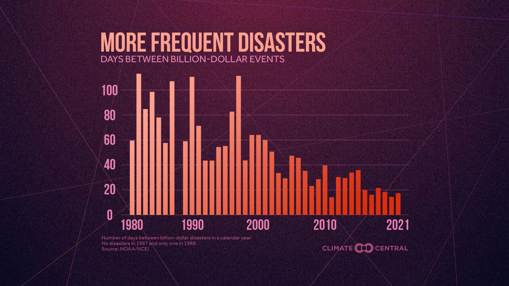

Fort Myers, Florida, residents inspect boat damage in a marina September 29 after Hurricane Ian made its way through the state.(Photo by GIORGIO VIERA/AFP via Getty Images)
The devastation wrought by Hurricanes Fiona and Ian in Puerto Rico, Florida, and beyond has once again thrust weather and climate disasters to the forefront of the nation’s attention.
According to NOAA, the U.S. has experienced 15 weather and climate disasters with losses exceeding $1 billion each in 2022 (as of September 30). The total cost of these disasters through the end of September was $29.3 billion. Adding up the final costs will take months after the end of the year to complete.
The costly and deadly billion-dollar disasters of 2022 so far have included: an April tornado outbreak in the Southeast that spawned 88 tornadoes, including several intense, long tracked tornadoes in Georgia and South Carolina a May hail storm that left large swaths of golf-ball sized hail across Minnesota, Wisconsin and South Dakota a destructive derecho that produced widespread 70+ mph wind gusts across the lower Midwest.
The costs of Hurricane Fiona and Hurricane Ian are still being accounted for as ongoing recovery continues. Historically, hurricanes and tropical cyclones are the most costly disasters by far, averaging $21 billion per event—more than double the average toll of the next most costly event type (drought).
This year’s mounting extreme weather costs reflect an increasing trend in billion-dollar disasters across the U.S.
It's not just the total number of disasters—but how often they occur—that
strains the resources available for communities to manage risks and
recover quickly.
Between 1980-2021, the time between billion-dollar disasters in a calendar
year has dropped steadily, according to an analysis by Climate Central.
The average time between billion-dollar disasters has dropped from 82 days
in the 1980s to 26 days in the 2010s.

The U.S. is well above the annueal average after having already experienced 15 billion-dollar disasters in 2022. (Graphic Courtesy of Climate Central)
These staggering figures primarily reflect direct impacts on assets
(including damage to homes, crops, and critical infrastructure), and
therefore don’t reflect the full toll of disasters, including on public
health—and especially mental health. According to the American Public
Health Association, up to 54% of adults and 45% of children suffer
depression after a disaster.
Weather and climate-related disasters can also result in widespread power
outages (as occurred in Puerto Rico after Hurricane Fiona), displacement,
and limited or unsafe food and water supplies, as well as loss of cultural
heritage, biodiversity and habitats.
These figures also don’t convey the disproportionate impacts of disasters
on people in poverty or the need for equitable allocation of federal
disaster assistance in accordance with social vulnerability.
A derecho that moved through theNorthern Plains of South Dakota in early May produced the second-highest number of hurricane-force wind gusts on record since 2004, according to Fox Weather. (Video Courtesy of Fox Weather)
According to the latest IPCC reports, it is an “established fact” that
human-caused greenhouse gas emissions have “led to an increased frequency
and/or intensity of some weather and climate extremes since pre-industrial
times.” And these trends are projected to continue with additional
warming.
The ambition of the Paris Agreement—to limit warming to 2.7°F (1.5 °C) by
2100—is very likely to be exceeded by the mid-2040s at the latest without
rapid emissions cuts. In November, nearly 200 nations will convene at the
United Nations Climate Change Conference (COP27) to accelerate climate
action. Without such progress, we can expect even more frequent and
intense billion-dollar disasters in the future.